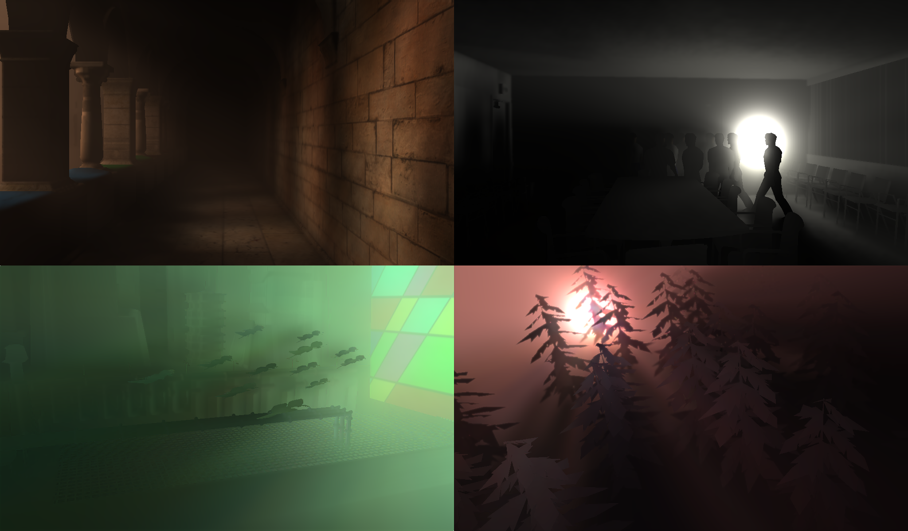
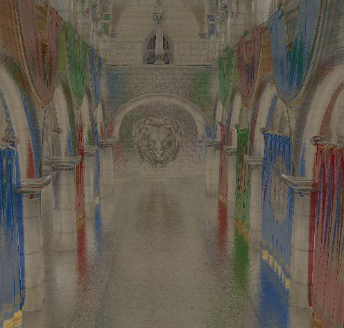
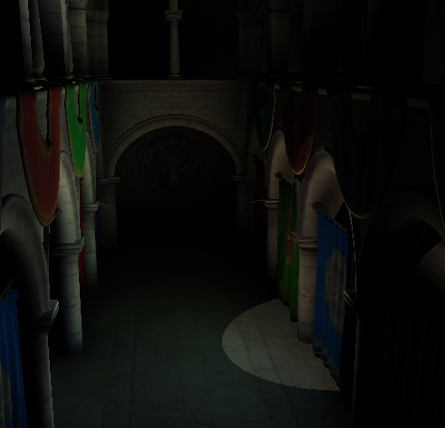
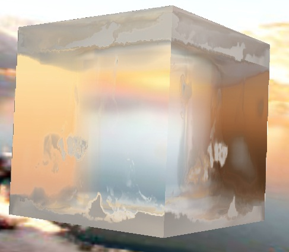
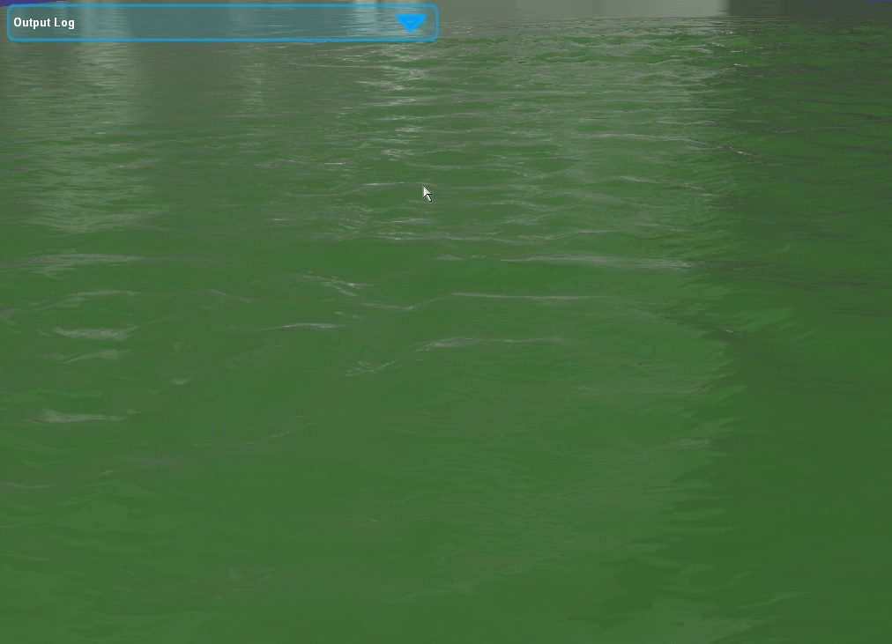
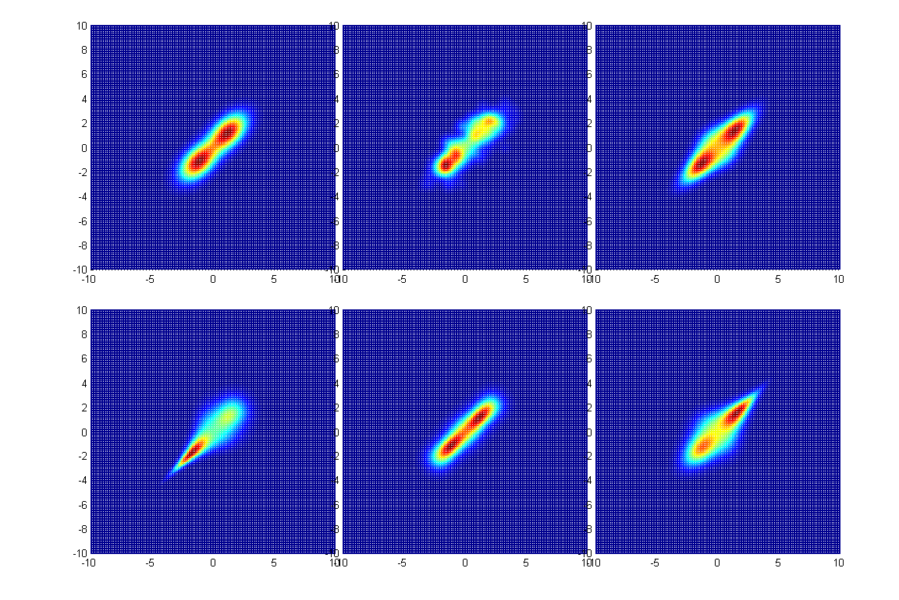

|  |
Imperfect Shadow Volume See Chris' Webpage for more information. |
 Preprint Preprint |
|
|  |
Glossy Effect (2012 Fall Research) Work in progress... |
|
|
|  |
Imperfect Shadow Map
For Global Illumination (2012 Summer Research) Implement imperfect shadow map (many light and point cloud) for GI. Explore and find interesting problems. Get familiar with IGLU framework and Optix. |
 Source Source |
|
|  |
Rough Refraction (2011 Fall Research) We introduce two methods that allow for varying roughness by
representing surface normals using |
Source Preprint |
|
|  |
Virtual Reality Landslide Project - Water (2010) We implemented realistic ripple and wave (proceduarl) controllable water on Gamebryo Engine in real time. |
|
|
|  |
The Copulas Based Multivariate Density Estimation (2008) In the decision and estimation fusion of multisensor system, it’s difficult to get enough samples of joint density. We introduced the copula based method that using marginal to tune the joint density to improve efficiency. |
{kind=link}